- Button
- Pill button
- Icon button
- Link button
- Social button
- Button group
- Stack button
- Caption button
- Search button
LEGO: the component system after the rebrand
How CARS24 tested a new look and feel on real screens, picked its first components from teams' roadmaps, and got 44 composable parts adopted in three countries.
- 44
- components in six families
- 26
- on the first, roadmap-led list
- 3
- countries' apps rebuilt on it
- 3
- build batches, in roadmap order
01 the starting point:
New colours. Same old parts.
The 2024 rebrand changed how CARS24 looked. The components underneath it hadn't changed at all.
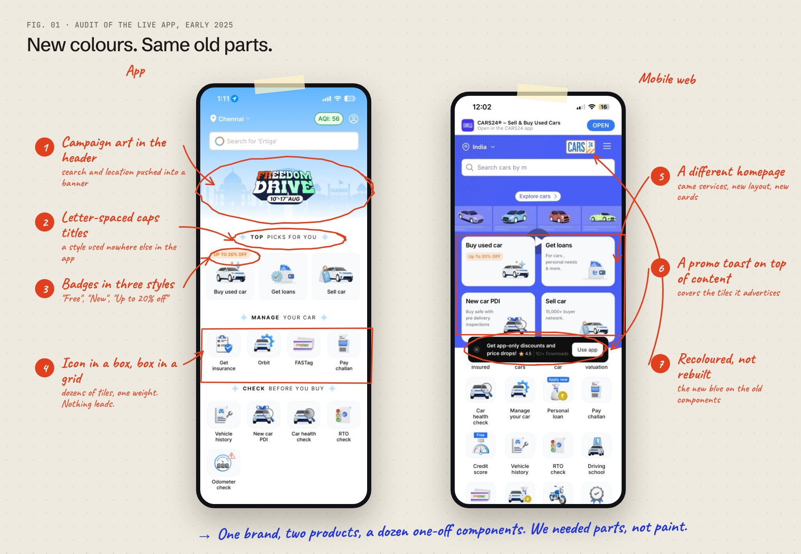
The rebrand moved the palette to OKLCH and carried a new blue through a four-layer token system. That is its own case study. But tokens only recolour what's already there. The buttons, chips, cards and headers were the same old components in new colours, and the app and mobile web still had two different homepages.
So the rebrand became the chance to rebuild the interface too. The team called the new system LEGO: small, solid parts that any team can put together.
Aniket led it as Design Systems Lead at CARS24, with a small group of system designers and product designers from each country.
The chapter before this one: one colour system for 10+ products in three countries.
02 who it was for:
Like three companies inside one
India, the UAE and Australia each had their own business, product and design teams, and their own plans.
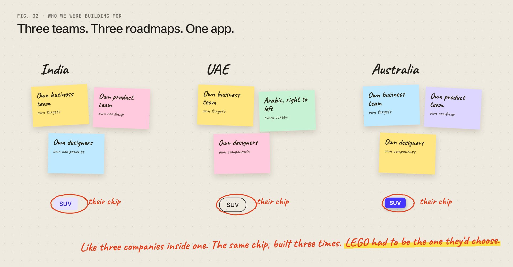
That was the hardest part of the job. A system made for one team would be ignored by the other two. The UAE also needed every screen in Arabic, reading right to left. And redesigns of the homepage, listing and product pages were already planned, so LEGO had to be ready before those teams started, or they would build their own again.
How might we give three teams with three roadmaps one set of components they'd actually choose?
03 look and feel, first:
Tested on real pages before drawing a component
Shadows, strokes, fills, radius, icons and contrast, each tried on real pages and reviewed with designers from every country.
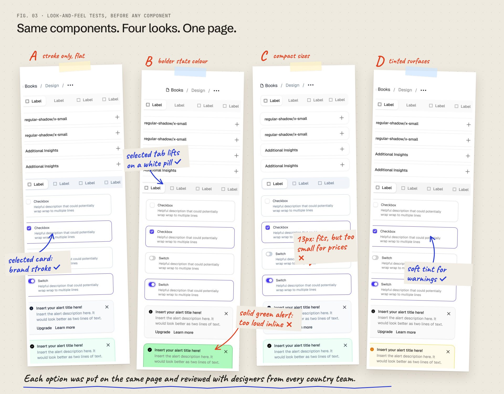
Before building anything, the team decided how LEGO should look and feel for the next few years. Nothing was too small to test: should shadows pop or barely show, what colour should they be, how dark can a border get before everything looks like a form, which corner radii are allowed.
Every option went onto real pages, not empty artboards: busy listing pages, light marketing pages, banners and forms. Designers from the country teams reviewed them side by side, so the decisions belonged to them too.
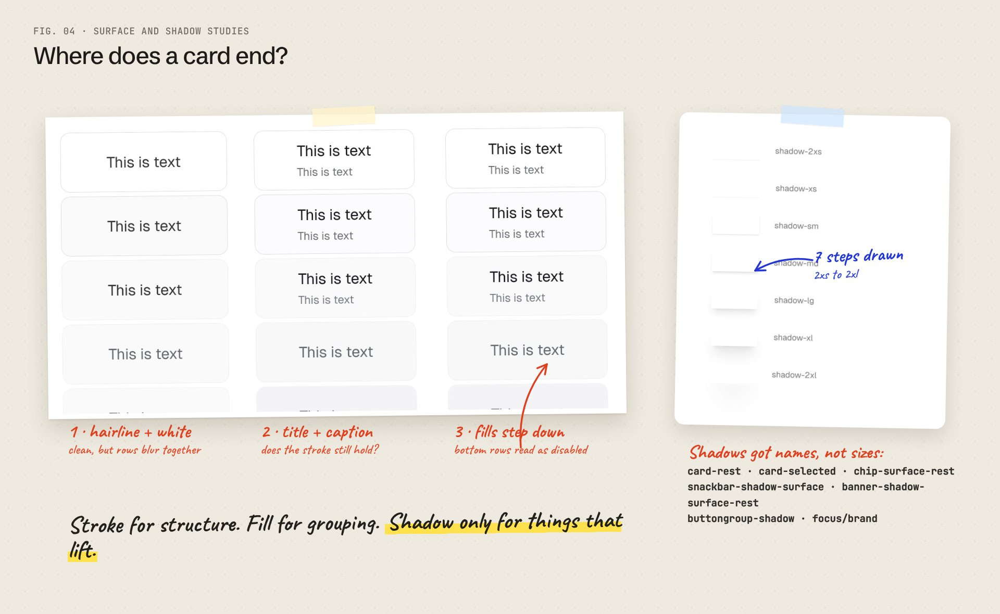
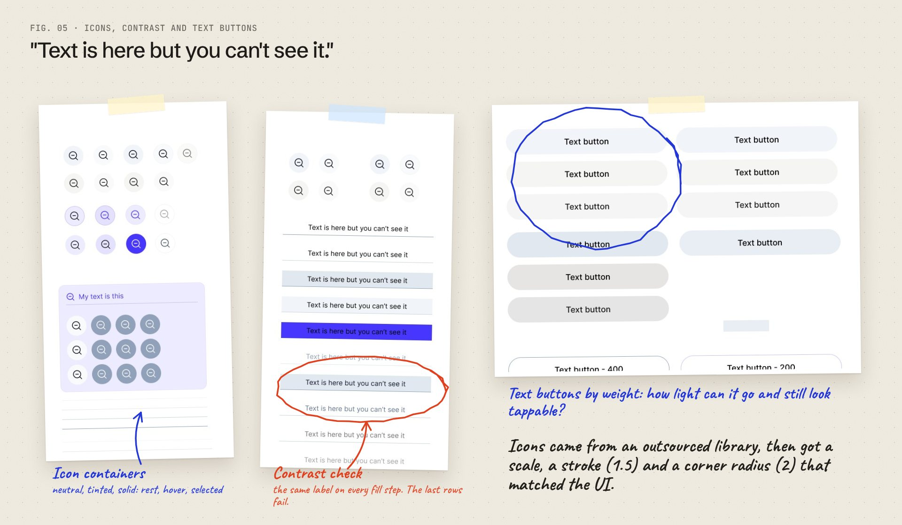
04 typography:
A type scale built for busy pages
Listing cards carry price, EMI, kilometres, fuel, owners and badges. Fonts were tested there first.
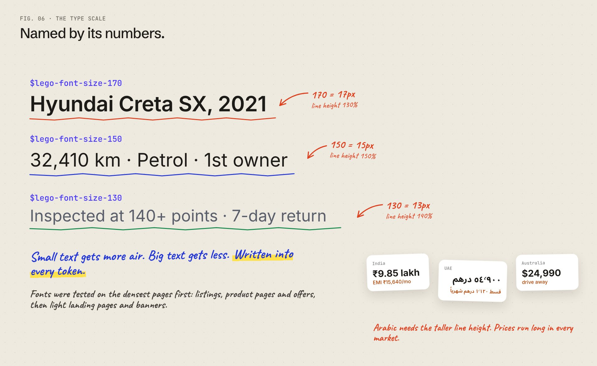
Candidate fonts were set into real pages from the apps: listings and product pages packed with information first, then light landing pages and marketing banners. The team checked how each font handled numbers and prices, how it sat next to Arabic, and how many lines a listing card took at each size.
The scale that came out of it names each size by its numbers. In $lego-font-size-150, 150 means 15px, and every size carries its own line height. Small text gets more space between lines, big text gets less.
05 on real screens:
Same page. New parts.
Every foundation decision was checked against the live homepage, so we could see what users would actually get.
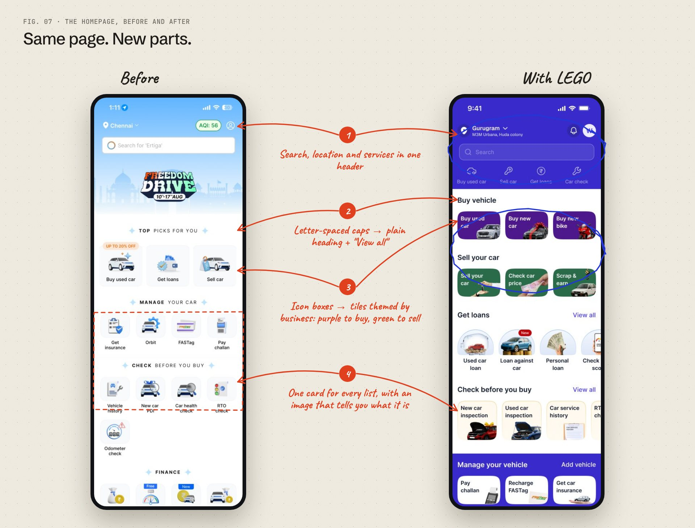
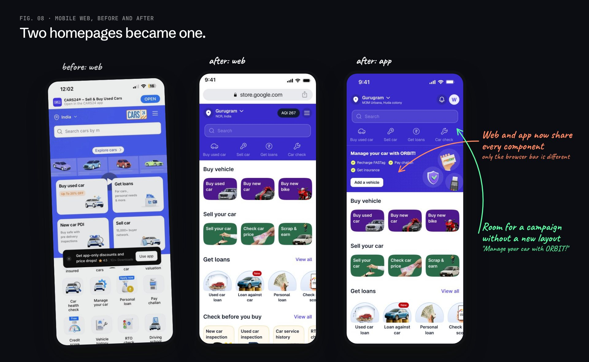
06 what to build first:
Not the button
Start with what the next roadmap is blocked on, used by the most teams and hardest to get right.
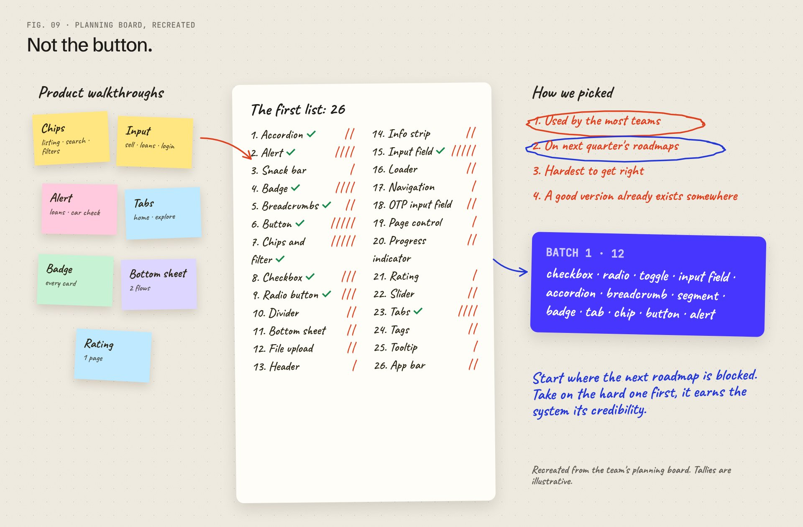
Most design systems start with a button. It looks simple and safe, but no team needs another team to give them a button. So the team did the opposite: collected each country's roadmap, sat through product walkthroughs, and noted every component on the screen.
Components that showed up for many teams, and on next quarter's plans, went first. That put the hard ones early: inputs, chips and filters, alerts and tabs. Building those first is what earned the system credibility.
Before drawing anything, the team looked for the best version a country team had already built and started from it. Product designers kept designing products; the system team did the merging.
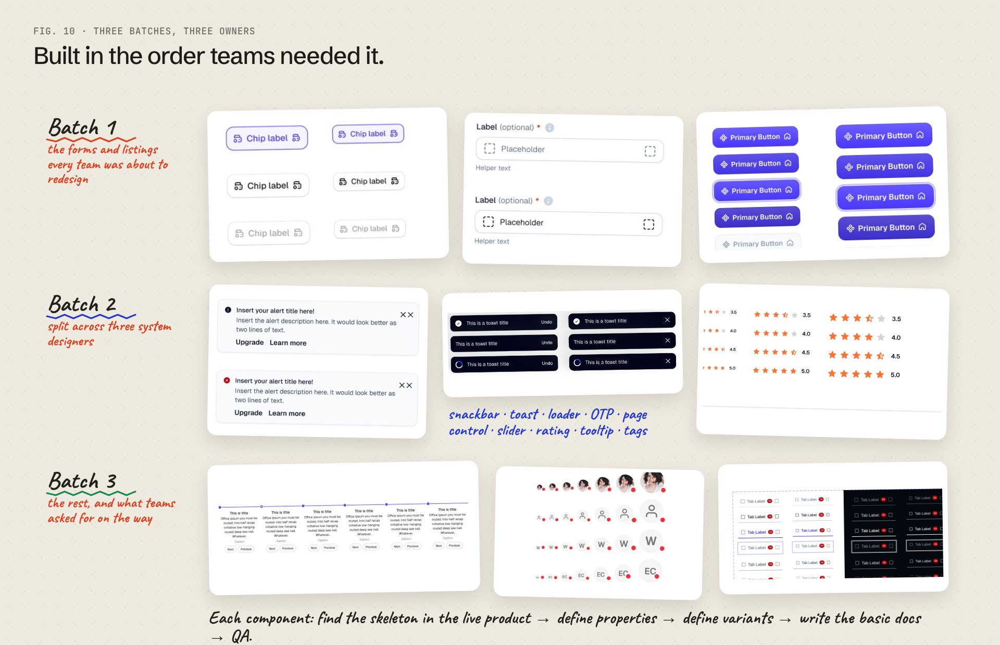
07 built to be composed:
Slots, not a variant for every case
Small private atoms, public components with slots, then compositions teams could copy and change.
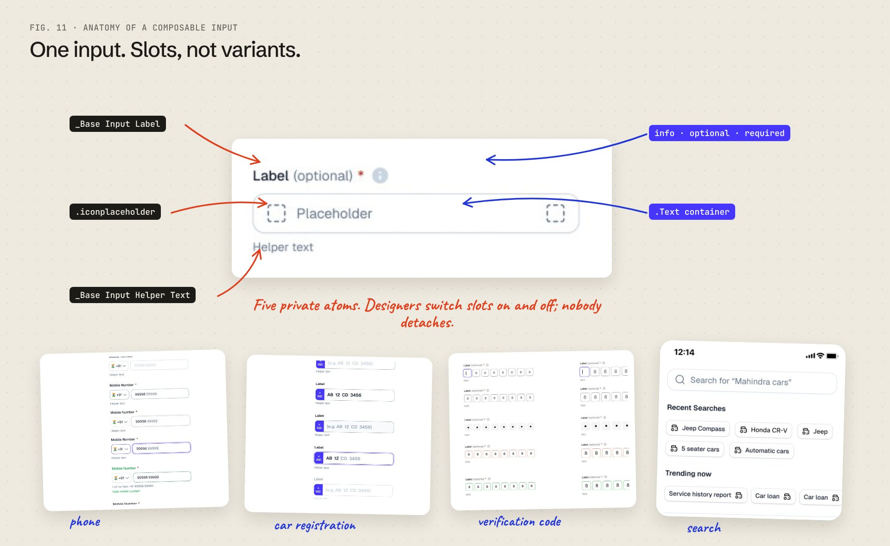
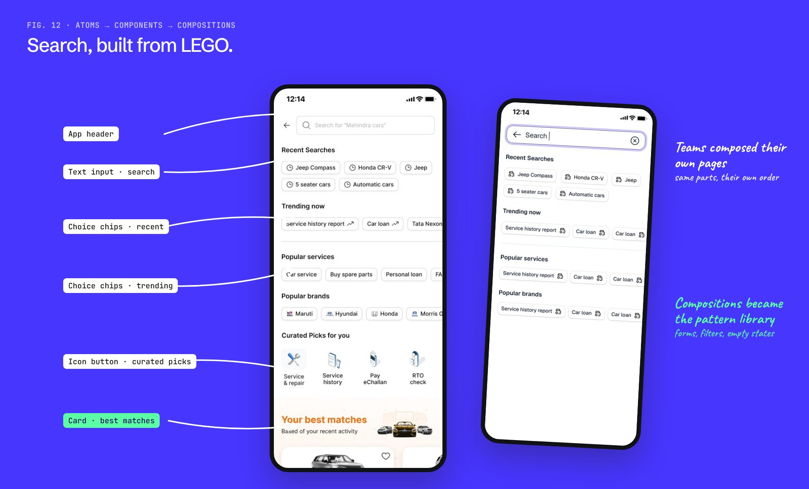
The next chapter: a pattern library that builds pages from tested blocks.
08 the library:
44 components in six families
Every sheet carries its states, sizes, usage notes and the date it last changed.
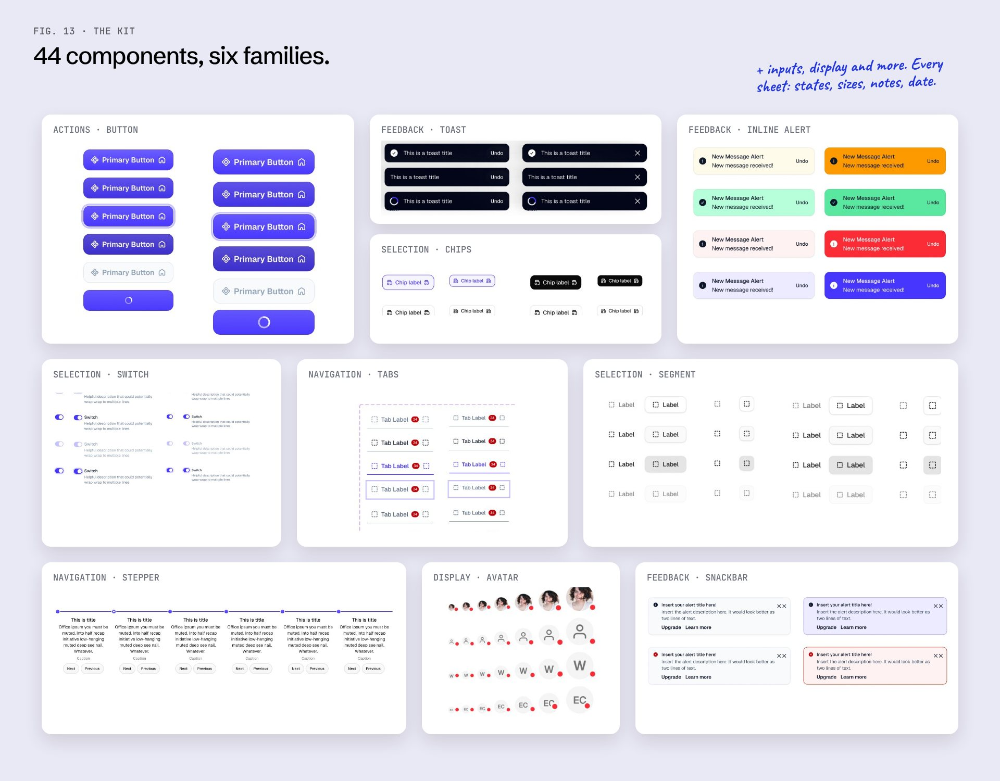
44components, each built from shared atoms
- Text input
- Number input
- Phone input
- Car registration input
- Verification input
- OTP generate
- File upload
- Slider
- Checkbox
- Radio button
- Switch
- Choice chips
- Segment control
- Rating
- Global alert
- System alert
- Inline alert
- Toast
- Snackbar
- Tooltip
- Loader
- Circular loader
- Loader dots
- Tab
- Breadcrumb
- Bottom bar
- App header
- Home header
- Stepper, horizontal
- Stepper, vertical
- Badge
- Tag
- Avatar
- Divider
- Accordion
09 definition of done:
One prop per concern
Every state is its own property, named the same in Figma and in code, and every component was QA'd before release.
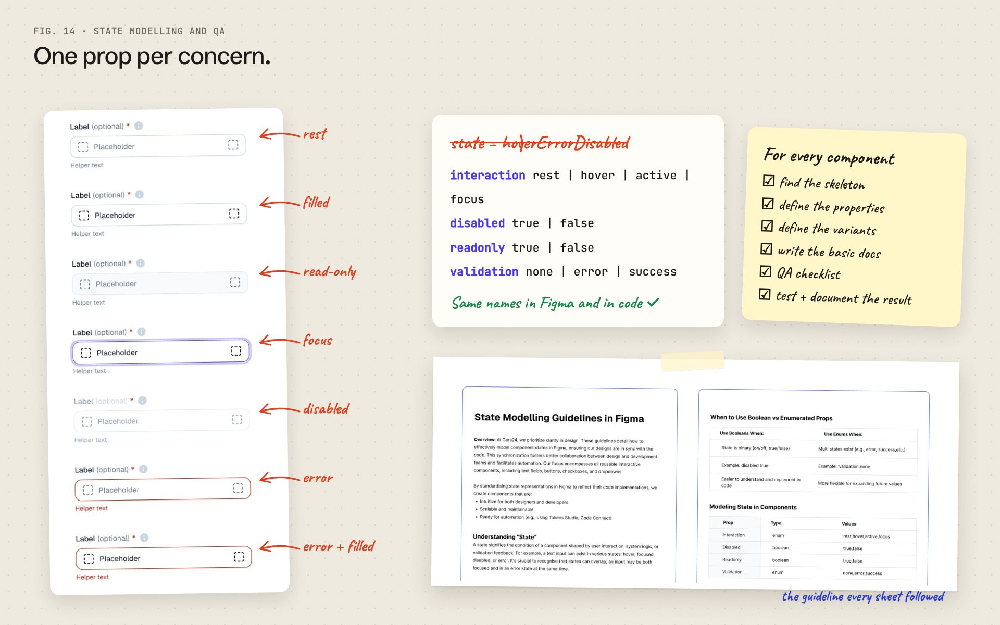
The state modelling guideline set one rule: don't merge states into a single property like hoverErrorDisabled. Interaction, disabled, read-only and validation are separate props, with the same names designers see in Figma and engineers use in code.
For every component the team found its skeleton in the live product, defined its properties and variants, wrote the basic documentation, then ran it through a QA checklist and recorded the result.
10 adoption:
Run like a launch, team by team
A library nobody uses is a museum. The rollout was planned as carefully as the components.
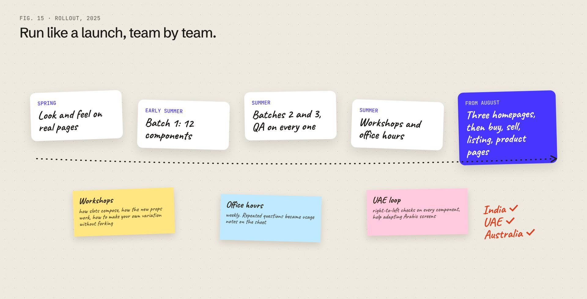
Workshops
How composability works
Hands-on sessions where designers rebuilt their own screens from LEGO slots and atoms.
Office hours
Weekly, open to everyone
Bring a screen, leave with an answer. Questions that kept coming up became usage notes.
Arabic
A loop with the UAE team
Right-to-left checks on every component, and help adapting their screens to the new system.
11 shipped:
The theme changes. The parts don't.
Buy, sell, loans and car check, rebuilt on LEGO, each business line on its own theme.
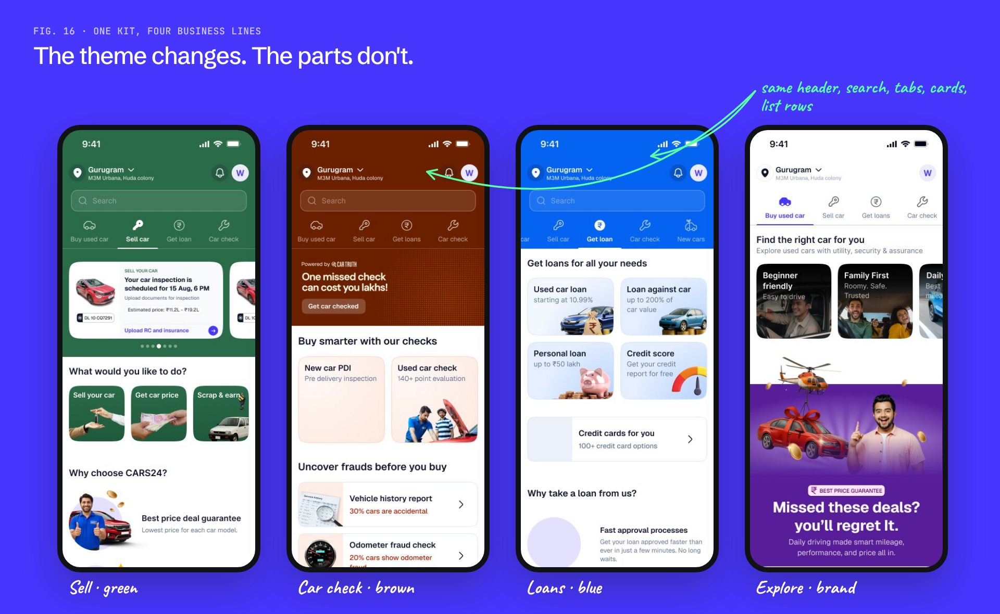
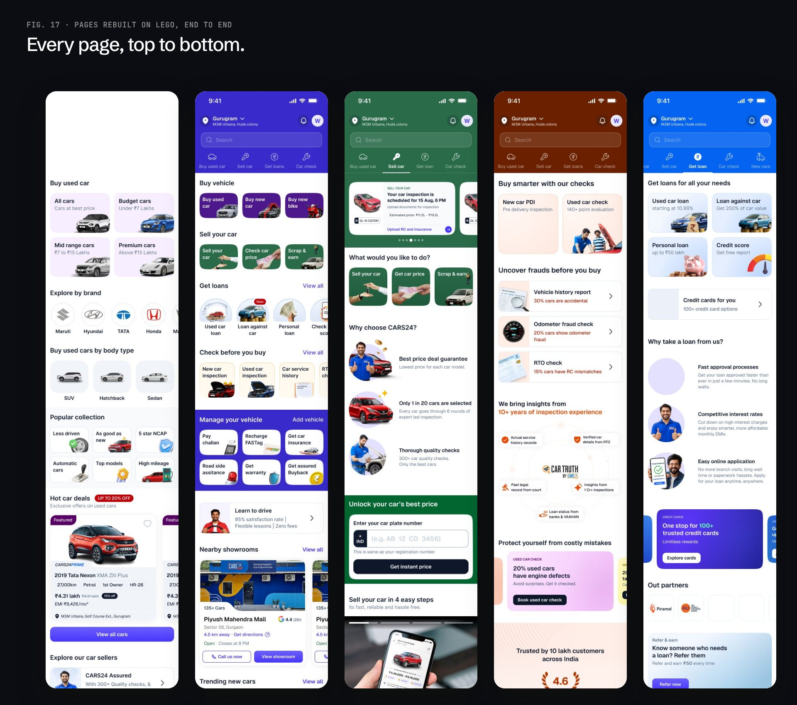
12 what changed:
From an old kit to one system in three countries
Reach
3 countries
The homepages for India, the UAE and Australia moved to LEGO.
Pages
Core flows
Buy, sell, listing cards and product pages, redesigned on the new system.
Library
44 components
Built from five shared atoms, with slots instead of endless variants.
Teams
Adopted, not imposed
Built in the order the teams' own roadmaps needed it.
01
Don't start with the button. Start with the component the next roadmap is blocked on.
02
Test the look and feel on real pages before drawing a single component.
03
Composable slots beat a variant for every case, and let teams make their own versions.
13 for your team:
The same playbook, as a studio engagement
Each step of this case study maps to how we work with clients now.
2 weeks, fixed
Audit
$1,500
In this case studyRoadmap and product walkthroughs, an audit of your live screens, and a scored list of what to build first.
See what's included6 weeks, fixedMost teams start here
Foundations
$5,900
In this case studyLook-and-feel tests on your real pages, then the first batch of composable components.
See what's includedMonthly, pause any time
Partner
$2,900/mo
In this case studyNext batches, QA, office hours and workshops, team by team, until it's in the product.
See what's includedThe work above was done by our founder as a CARS24 employee. Layer One now runs the same method as a studio, for product teams of any size.
Aniket Pandey led this as Design Systems Lead at CARS24 (2025), with the CARS24 system designers and the product design teams in India, the UAE and Australia. This is employee work, not Layer One client work. Screens and component sheets belong to CARS24 and are shown for portfolio purposes. The boards are annotated for this page; the planning board is a recreation and its tallies are illustrative.